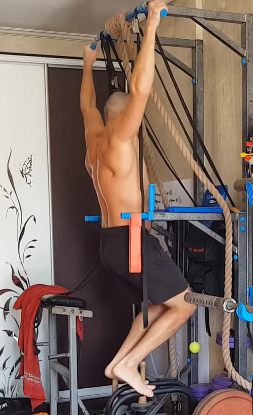
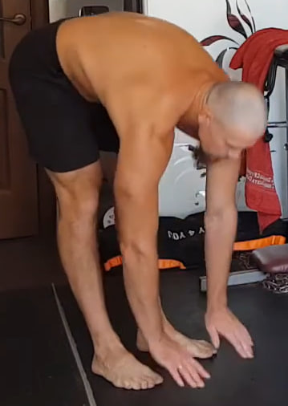
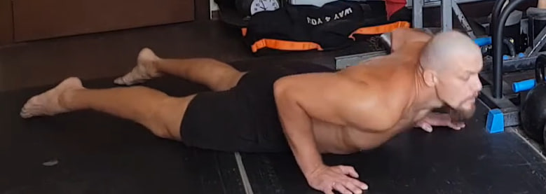
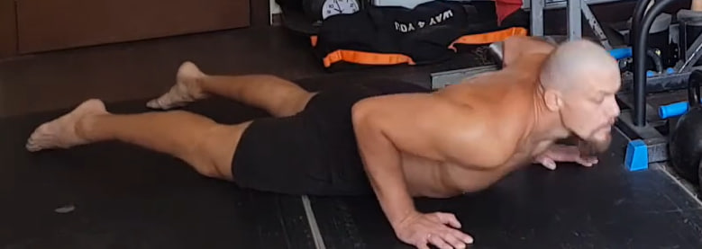

1. Saltos en posición de plancha


Desde la posición de plancha, salta llevando los pies hacia adelante, debajo del pecho, y luego vuelve a la plancha con otro salto. Mantén el abdomen firme y la cadera estable para que la zona lumbar no se hunda. Haz 10 repeticiones rápidas pero controladas.
2. “Barco” isométrico para la espalda

Acuéstate boca abajo con las piernas estiradas y las manos detrás de la cabeza. Desde esta posición, eleva el pecho, los codos y la parte superior del torso lo más alto posible, creando una tensión fuerte en toda la espalda. Mantén las piernas extendidas y el abdomen activo. Fija la posición arriba, respira de forma tranquila y mantén la tensión durante unos 10 segundos. Repite 10 veces.
3. Colgamientos parciales con apoyo en los pies
Agarra una barra o cualquier soporte sólido que no pueda romperse. No cuelgues todo tu peso como en una dominada: deja parte del peso sobre los pies para mantener un estiramiento seguro y controlado. Relaja los hombros y permite que la columna se alargue de forma natural; si es posible, inclina ligeramente la pelvis hacia adelante para mejorar la descompresión de la espalda. Mantén la posición durante 10 segundos y repite 10 veces.
4. Peso muerto isométrico “bloqueado”

Colócate de pie con los pies al ancho de los hombros y las rodillas ligeramente flexionadas. Inclina el torso hacia adelante manteniendo la espalda firme y recta. Sujeta con las manos las rodillas o la parte superior de las piernas, como si fueras a iniciar un peso muerto. Desde ahí intenta levantar el torso hacia arriba como en una levantada real, pero las manos bloquean el movimiento. Se crea así una tensión isométrica muy fuerte en la espalda baja, glúteos y cadena posterior, sin movimiento visible. Mantén la contracción durante 10 segundos y repite 10 veces.
5. Saltos estrella desde sentadilla


Parte desde una sentadilla profunda con las manos cerca del suelo. Desde la parte baja, realiza un salto explosivo hacia arriba abriendo brazos y piernas en forma de estrella. Aterriza suave, vuelve inmediatamente a la sentadilla profunda y repite. Completa 10 repeticiones seguidas manteniendo un ritmo elástico y continuo.
6. Estiramiento hacia el suelo
Colócate de pie con las piernas completamente rectas y los pies al ancho de las caderas. Inclina el torso hacia adelante intentando llevar las manos al suelo. No te limites a doblarte desde la cintura: empuja la pelvis hacia atrás todo lo posible para crear un estiramiento profundo en los isquiotibiales y la cadena posterior. No flexiones las rodillas, deja caer el peso del torso y respira de forma tranquila. Mantén el estiramiento durante 10 segundos y repite 10 veces.
7. “Gato” dinámico para la columna
 

Acuéstate boca abajo con las manos a los lados del pecho. Empuja el suelo y eleva el torso hacia arriba, estirando la parte frontal del cuerpo y arqueando la espalda como en la postura de la cobra, mirando ligeramente hacia arriba sin tensar el cuello. Luego desciende con control, acercando el pecho al suelo sin perder la tensión del cuerpo. Mantén el abdomen firme y realiza 10 repeticiones con un movimiento suave y continuo.
8. Saltos en posición de plancha


Repite el mismo ejercicio de saltos en plancha: desde la posición de plancha, salta llevando los pies hacia adelante debajo del pecho y vuelve atrás con otro salto. Mantén el abdomen tenso y la cadera estable en todo momento. Realiza 10 repeticiones rápidas pero siempre controladas.